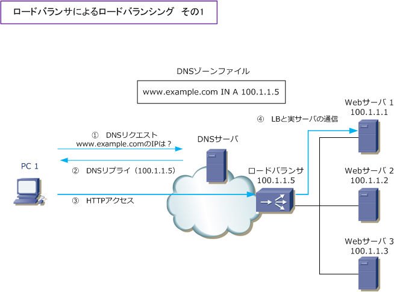
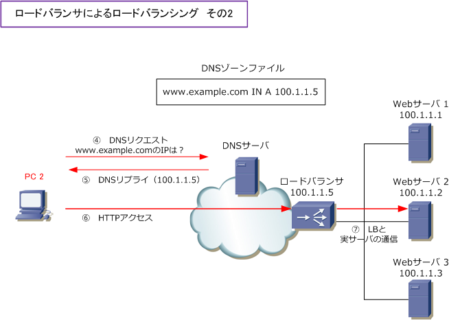
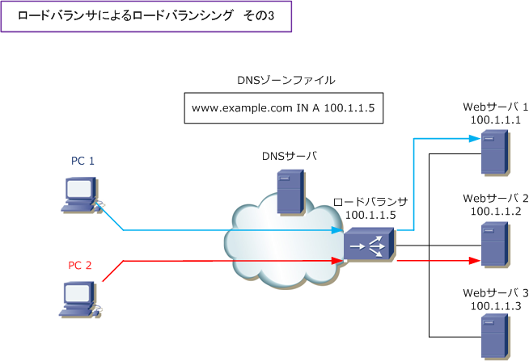
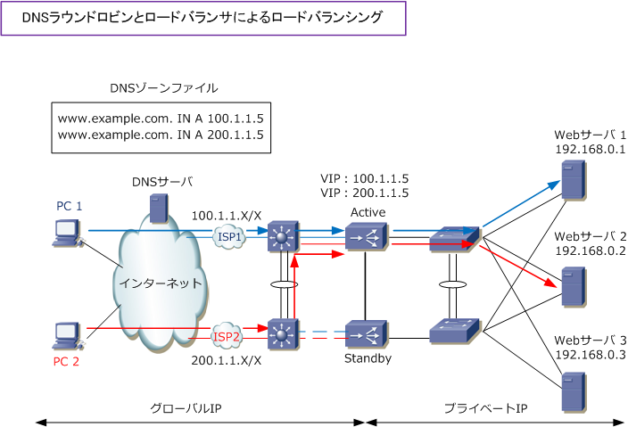

Load Balancing - DNS round robin
外部公開サーバへの効果的な負荷分散のために
社内ネットワークに配置されたサーバ負荷分散であれば、サーバの上位にロードバランサを配置すれば それだけで効果的な負荷分散を実現できます。外部公開されたECサイトなどのWebサーバの負荷分散は ロードバランサ導入とDNSラウンドロビン機能の両方を実装することで、効果的な負荷分散ができます。
ロードバランサの通信フロー
先ず、ロードバランサ導入とDNSラウンドロビン機能を組み合わせた時の通信フローを理解しやすいように 下図ではDNSラウンドロビン機能を使用せず、単にロードバランサを導入した時の通信フローを紹介します。

| 項番 | 説明 |
|---|---|
| ?@ | クライアントPC1 が、ISPのDNSサーバに「www.example.com」のDNSリクエストを送信。 |
| ?A | DNSサーバが、www.example.comのIPアドレス「100.1.1.5」のDNSリプライを送信。 |
| ?B | クライアントPC1 は、100.1.1.5「ロードバランサ」にHTTP接続を行う。 |
| ?C | ロードバランサは、負荷分散のアルゴリズムに従って、100.1.1.1「Webサーバ1 」へ転送する。 |
インターネット上の2台目のクライアントPCがアクセスしてきた場合、Webサーバの負荷分散を行うために ロードバランサの負荷分散アルゴリズムによって、異なるWebサーバへパケットを転送するようになります。

| 項番 | 説明 |
|---|---|
| ?C | クライアントPC2 が、ISPのDNSサーバに「www.example.com」のDNSリクエストを送信。 |
| ?D | DNSサーバが、www.example.comのIPアドレス「100.1.1.5」のDNSリプライを送信。 |
| ?E | クライアントPC2 は、100.1.1.5「ロードバランサ」にHTTP接続を行う。 |
| ?F | ロードバランサは、負荷分散のアルゴリズムに従って、100.1.1.2「Webサーバ2 」へ転送する。 |
クライアントPC1が「www.example.com」と通信する場合、ロードバランサは自身に着信したパケットを Webサーバ1へ転送して、クライアントPC2のパケットはWebサーバ2へ転送して通信の継続性を維持します。 この通信の継続性は、ロードバランサの パーシステンス（ セッション維持 ）という機能で実現しています。

ロードバランサ＋DNSラウンドロビン機能を組み合わせた通信フロー
DNSラウンドロビン機能を組み合わせたロードバランサの通信フローを見てみましょう。今までの解説図より より実践的な解説図で説明します。今までの解説図の構成のままでは、サーバの負荷分散には成功しますが、 ロードバランサに障害が発生すると通信ダウンが発生してしまいます。また、インターネット回線がシングル である場合、その回線に障害が発生すると通信できなくなります。そして一般的に各サーバはロードバランサ に直結するのではなくて、L2スイッチに接続させるのが一般的です。これらの問題点を解決した構成案が下図。

※ 上図ではWAFなどの製品は省略。また、BGP等のダイナミックルーティングプロトコルを使用せずマルチホーミング環境を構築。
上図でISPのDNSサーバでAレコードを2行を書いています。クライアントからのDNSリクエストを受け取ると www.example.comのIPアドレスは 100.1.1.5 または 200.1.1.5 と順番に応答します。これで100.1.1.5を DNSリプライとして受信したPCは、ISP1経由でパケットを着信させて「200.1.1.5」をDNSリプライとして 受信したPCは上図のISP2経由でパケットを着信することになるので、インターネット回線の負荷分散を実現。
また、上図構成では、Webサーバを複数台導入し、ロードバランサもActive/Standbyで冗長化しているので Webサーバまたはロードバランサーに障害が発生した場合でも、通信の継続性が保たれます。 しかし、インターネット回線の障害時の確実な冗長化のためには回線負荷分散装置が必要です。